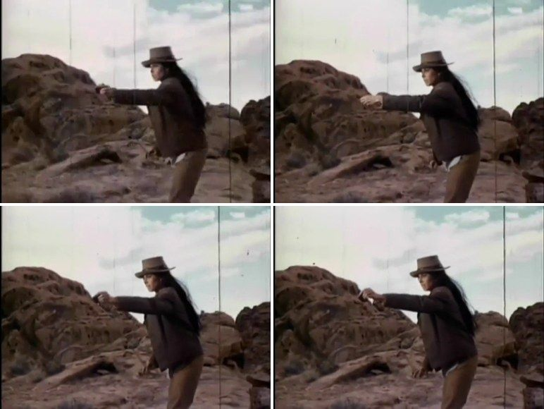

Judged by an AI assistant, spot-checked by the author.
Held up on 7 fresh films: 50% → 70%
The system on real scenes
What it produced for four scenes from public-domain films. The three matches were labelled as showing exactly what the ad asked for.

Matched ad
activity: group of riders on horses moving across desert
Matched ad
visible: people seated, plates, napkins, glasses
Matched ad
activity: car driving along winding road
Safety check
Blocked under strict rules; standard and lenient rules don't block weapons on their own.
What worked
What improved it, and what didn't
Changes are in percentage points (pts) of top picks that fit the ad.
Scene descriptions
Searching seconds, then grouping into scenesBest moments found, out of 10.
Re-ranking the shortlist
Dialogue searchFewer picks showing exactly what the ad asked for.
Searching by the ad's themeFewer picks showing exactly what the ad asked for.
A newer image model
See every comparison
Dot: average change across ads. Bar: range of likely values (95% interval). A bar crossing 0 means no clear change. Axis: change in percentage points.
Horizontal axis: change in percentage points.
Brand safety
Keeping brands safe
At standard settings it blocks 6% of scenes and catches 71% of risky ones; 64% of what it blocks was actually fine.
Violence scenes caughtNo model on the laptop could see fights reliably.
With the safety checks on (standard rules), a busy ad schedule stays 76% full, against 86% with no rules.
Details
The final system, tested on 452 fresh scenes, labelled by an AI assistant that didn't see the system's answers.
| rules | scenes blocked | blocks that were wrong | risky scenes caught |
|---|---|---|---|
| lenient | 4% | 83% | 95% |
| standard | 6% | 64% | 71% |
| strict | 11% | 50% | 87% |
- Scenes blocked: share of all scenes the rules block.
- Blocks that were wrong: of the blocked scenes, the share that were actually fine.
- Risky scenes caught: of the scenes that should be blocked, the share that were.
- Asking one yes/no question per content type: 26 pts fewer wrong blocks, but 9 pts fewer risky scenes caught.
- Checking weapons on larger frames: 89% of weapons scenes caught on the larger test.
- Larger-frame checks for horror, smoking and alcohol, and sharper frames generally: no gain on fresh scenes.
- Blocking whole genres instead: 94% of its blocks were scenes that were fine.
- The ad-space figure was measured with the safety version before the final weapons check.
Does knowing the scene make ad space worth more?
Only sometimes. In a simulated market, selling ad breaks by scene (safety × topic) earned more than one flat-priced pool when demand was light, but not reliably when demand was heavy.
More revenue than one flat-priced poolHigher in 10 of 10 simulations.
Fewer breaks soldRevenue came out ahead in only 7 of 10 simulations.
7% of breaks sit next to scenes no advertiser here would accept, and never sell.
Simulation: advertiser values and budgets are assumptions; the scene signals are measured. With no premium for a relevant scene, heavy demand loses (0.86× revenue).
Speed
How fast it runs
49.9 hours of video indexedOne M5 laptop: CPU decoding (cpu-laptop) with the GPU running the model (gpu-apple-m5).
The laptop's hardware video decoderSeconds per hour of video (hwdec-apple-m5). The CPU took 11.6 (cpu-laptop).
More detail
The image model, frames per second (fps). Searching 179,545 frames on cpu-laptop takes 4.7 ms per search exactly, or 0.25 ms per search with an approximate index that finds 92% of the same top 10.
Cost
Cost of running this on 1,000 hours of video
$227 and 185 machine-hours per 1,000 hours of videoThe whole pipeline on one M5-class Mac, priced at a cloud Mac's on-demand rate ($1.23 per hour, AWS, 13 Oct 2026). Assumes the cloud M4 runs as fast as our M5; not measured.
Where the time goesSeconds of machine time per hour of video, one M5 laptop.
The AI models that made matching and safety better are 93% of the cost. Frame search alone costs about $3 per 1,000 hours.
The full pipeline costs 1.65× the simplest version (just indexing every video frame): 666 vs 403 seconds of computer time per hour of video. The AI models add more cost than the speed-ups saved. No NVIDIA or CPU-only total was measured.
How we tested
How it was tested
Rules fixed before each test
Test films never used for tuning
Losses reported like wins
Where each number comes from (exact values)
- Top picks that fit (thematic precision@10, experiment 4g): frames 0.482 → frames + descriptions 0.692; difference +0.210 [+0.155, +0.268]; 42 ads better, 14 same, 4 worse. With the author's labels: +0.213.
- 7 fresh films (4h): 0.498 → 0.695; +0.197 [+0.142, +0.253]; 45 / 8 / 7. Re-ranking +0.035 [+0.008, +0.062]; author's labels +0.022 [−0.003, +0.047].
- Search vs genre (4): 0.440 vs 0.075 (random 0.020). Newer image model: 4c +0.025 [−0.045, +0.095]; 4d +0.015 [−0.013, +0.045]. General tweaks (4b): +0.010 [−0.055, +0.085]. Theme search (4e): literal −0.068 [−0.113, −0.028]. Dialogue (4f): literal −0.130 [−0.180, −0.083].
- Scene units (3): best moments found 9.26 vs 5.68 (single seconds) and 2.89 (10-second chunks).
- Final safety system (5e test, 452 scenes weighted to 4,442): blocked 3.5% / 5.6% / 10.5%; wrong blocks 83% [76, 89] / 64% [57, 70] / 50% [42, 58]; risky caught 95% [83, 100] / 71% [44, 99] / 87% [66, 100]. Weapons recall 0.46 → 0.89. Violence caught 2 of 11 (4B and 8B models).
- Safety changes: one question per tag (5b) wrong blocks −25.8 pts [−32.5, −17.7], caught −9 pts [−16, −4]; weapons check (5d) 0 of 9 → 8 of 9 weapons scenes; horror/smoking/alcohol checks (5e) standard F1 −0.04 [−0.12, 0.00]; sharper frames (5c) standard F1 −0.13 [−0.46, +0.20]; genre blocking 94% wrong blocks.
- Ad space (
results/phase5b/inventory_cpu-laptop_seed0.json): measured with the safety version before the final weapons check (5b). Tight-book fill: no rules 85.9%, lenient 77.6%, standard 75.6%, strict 68.1%; first detector 61.0%; strict genre 33.8%; relevant slots removed 14.0 / 15.0 / 22.7%. Final system (5d), strict only: 67.5%. - Ad market simulation (Phase 7,
results/phase7/; median and range over seeds 0–9; values, budgets and premium are assumptions): breaks by safety class clean 77.5% / mild 10.7% / sensitive 4.7% / restricted 7.1% of 4,903; restricted 350 breaks, 0% sold. Segmented ÷ flat revenue, premium 2: light demand (slack book) 1.13 (1.08–1.26), 10 of 10 seeds, breaks sold 1.07×, advertiser value 1.26×; heavy demand (tight book) 1.06 (0.98–1.18), 7 of 10, breaks sold 0.75×, advertiser value 1.00×. No premium: 1.09 (1.02–1.16) / 0.86 (0.75–0.90). Premium 1.5: 1.11 / 0.96. Premium 3: 1.20 / 1.28. Pre-registered verdict: does not "help" (needs 9 of 10 seeds in both books). - Speed (2, 1, 3): library 8.5 min, 10.2 s per video-hour; fp16 987 fps; hardware decoder 61.0 vs 11.6 s per video-hour; static int8 recall@10 0.215; search 4.72 ms exact, 0.251 ms approximate (recall 0.915).
- Cost (Phase 6,
results/phase6/): whole pipeline 665.8 s per video-hour (656.2–678.2), 185 machine-hours and $227 per 1,000 video-hours at mac-m4.metal $1.23/h (assumes M4 = M5 speed; not measured). Stages: descriptions 292.3 s, safety 151.8 + 90.8 s, Whisper 84.9 s, images 31.9 s, frame search 10.0 s (9.8–10.3), audio decode 3.2 s, text embedding 1.0 s. Frame search only: 2.8 machine-hours, $3.4. Naive baseline: 403.0 s per video-hour, 112 machine-hours, $138; ratio 1.65×. CPU: frame search 38.6 s per video-hour; Whisper 838 s per audio-hour (cpu-laptop); scene descriptions not measured on CPU. NVIDIA not measured. Workload: 191.8 scenes per video-hour (19 films, 25.7 h). - Every figure is traced to its results file in
NUMBERS.md.